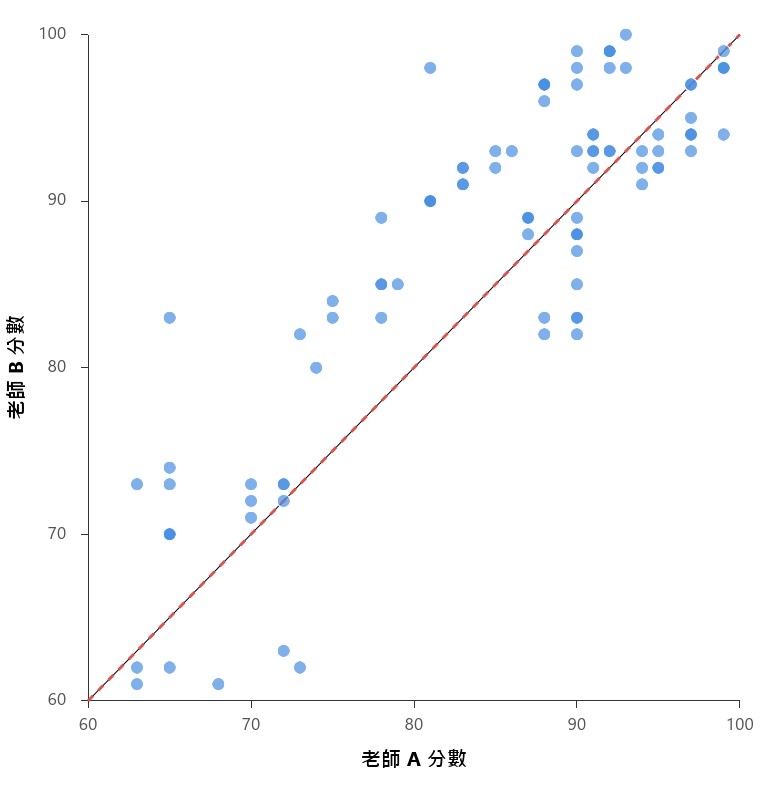
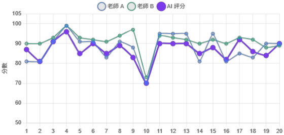

Reliability and Difference Analysis of GenAI Human-Machine Collaborative Assessment
Authors: Yu-Ting Shih and Dun-Cheng Chang
Presentation details: Shih, Y.-T., and Chang, D.-C. (June 6, 2026). Reliability and Difference Analysis of GenAI Human-Machine Collaborative Assessment [Conference presentation]. 7th Taiwan Conference on Business Education and Management, Tainan, Taiwan.
Overview
This article centers on Reliability and Difference Analysis of GenAI Human-Machine Collaborative Assessment and highlights the study background, method, findings, and practical implications.
Key Points
- Background: This article centers on Reliability and Difference Analysis of GenAI Human-Machine Collaborative Assessment and highlights the study background, method, findings, and practical implications.
- Method: The study presents a clear research design that can support further work in educational technology and AI-supported learning.
- Findings: The article highlights the value and applicability of AI-related approaches in educational and learning contexts.
- Significance: This article can serve as a reference point for future research design, instructional practice, or system development.
Summary
This article centers on Reliability and Difference Analysis of GenAI Human-Machine Collaborative Assessment and highlights the study background, method, findings, and practical implications.
Extracted Figures

